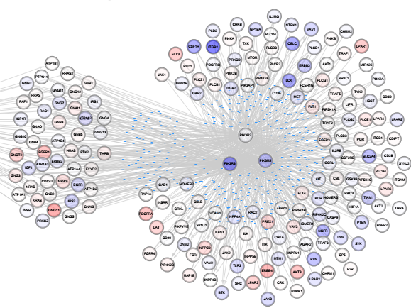

————数据分析与结果展示
|  |
RNA-seq是一种定量分析转录组的高通量测序技术。这种技术可以用来测量基因的表达水平，检测可变剪接，发现新基因和转录本，检测发生在外显子区域的基因突变，检测基因融合等等。相比于传统的芯片杂交技术(microarray)，RNA-seq有着精度更高，应用更广泛的优点。自从2008年首篇文章(Marioni J. C., et al)发表以来，RNA-seq的实验技术已经非常完善，成为一种常规的高通量实验技术，并且已经成为转录组分析的主要工具。 |